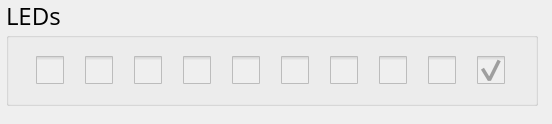
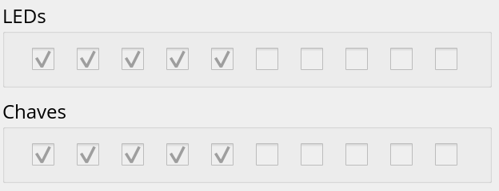
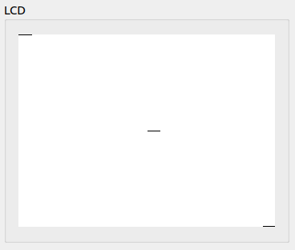

Lab 12: Periféricos¶
Ao final desse lab você deve ser capaz de:
- Escrever nos LEDs do nosso Z01
- Ler das chaves (SW) do nosso Z01
- Escrever no LCD do nosso Z01
Tip
Para fazer esse lab, você deve ter lido a teoria sobre mapa de memória
Note
Dúvidas sobre assembly? Z01->Resumo Assembly
Esse lab deve ser feito no Z01Simulador, para abrir o programa basta executar o script Z01simulador.py dentro da pasta do projeto E-Assembly
Todos os arquivos possuem teste, após programar no Simulador execute o teste
LEDs¶
Problemas relacionados ao LED do nosso Z01
Lembrando...
Qual endereço de memória para acessar os leds do Z01?
21184
led1.nasm
Projetos/E-Assembly/src/labs/led1.nasm
Faça o LED0 acender

leaw $1, %A
movw %A, %D
leaw $21184, %A
movw %D, (%A)
led2.nasm
Projetos/E-Assembly/src/labs/led2.nasm
Faça os LEDs: 9,7,5,3,1 acenderem

- Você precisa escrever a palavra 0b
1010101010nos LEDs, converta para decimal e carrega na CPU comleaw - Use uma calculadora/google para isso
- no google:
bin 1010101010 to dec
- no google:
SW¶
Problemas relacionado a chave do nosso Z01
Lembrando...
Qual endereço de memória para acessar as chaves SW do Z01?
21185
sw1.nasm
Projetos/E-Assembly/src/labs/sw1.nasm
Faça os LEDs serem o valor das chaves: LED = SW
Antes de iniciar a simulação, você deve configurar as chaves:


leaw $21185, %A
movw (%A), %D
leaw $21184, %A
movw %D, (%A)
sw2.nasm
Projetos/E-Assembly/src/labs/sw2.nasm
Faça os LEDs serem o contrário do valor das chaves: LED = !SW
Antes de iniciar a simulação, você deve configurar as chaves:

Utilize a instrução notw %D para inverter o valor salvo no registrador %D
LCD¶
Trabalhando com o LCD.
lcd1.nasm
Projetos/E-Assembly/src/labs/lcd1.nasm
Acione os 16 primeiros pxs do LCD.

leaw $16384, %A
movw $-1, (%A)
movw $-1, (%A): Gera o vetor1111111111111e grava no endereço que %A aponta (primeiros pxs do LCD)
lcd2.nasm
Projetos/E-Assembly/src/labs/lcd1.nasm
Acione todos os pxs da primeira posição de memória do LCD, do meio do LCD e da última posição de memória do LCD.

O endereço central do LCD vocês podem calcular por:
LCD = 320x240
1. enderecos_porLinha = 320/16
= 20
2. offset_linhaCentral = 20*240/2
= 2400
3. endereco_linhaCentral = 16384 + 2400
= 18784
4. px_central = 18784 + 10
= 18794